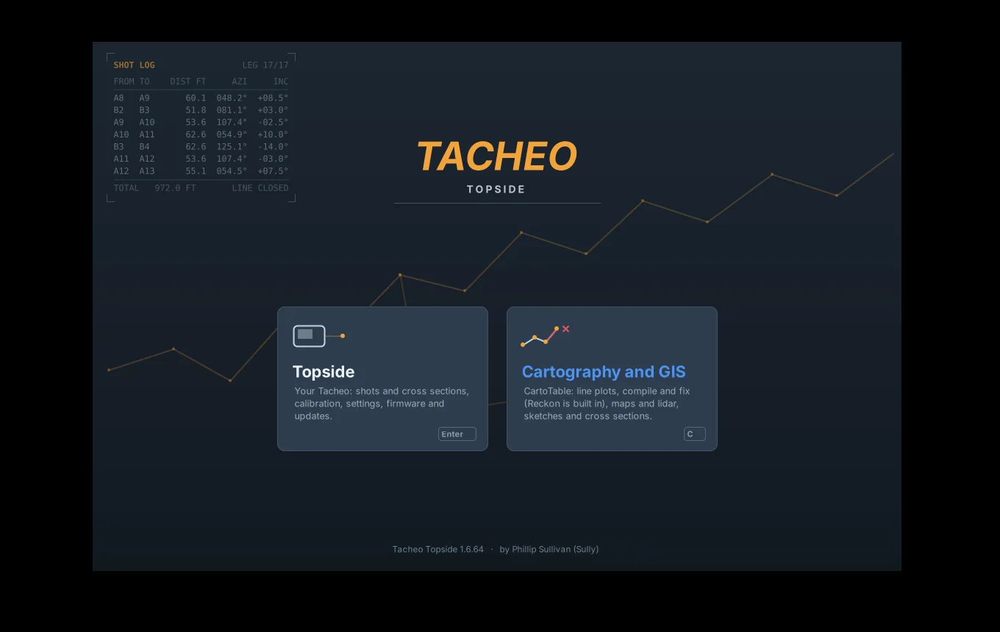
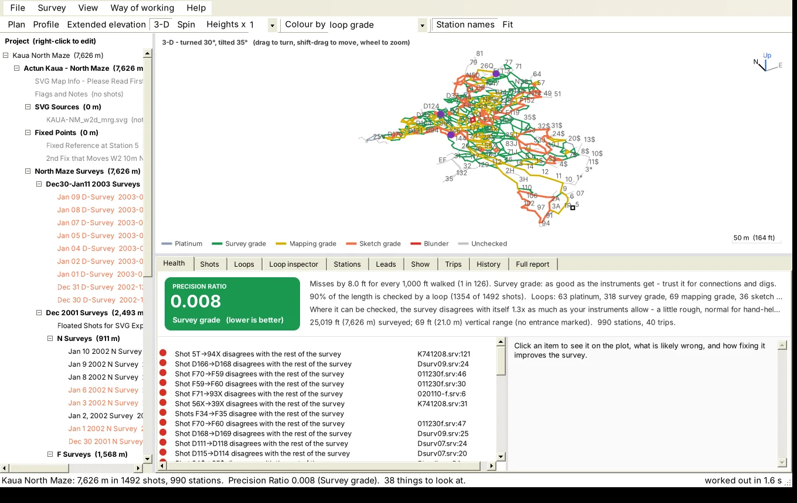

The instrument
Tacheo
The cave survey instrument that checks its own work.
Laser, compass and clino in one sealed handheld with a colour screen. Two units check every Frontsight against its Backsight before you leave the station.
Explore Tacheo →
Free · Windows & Mac
Topside
The companion program.
One-click firmware updates, shots grouped by survey day, a health check for each unit, and it reads DistoX2, Cavway X1 and BRIC too.
Explore Topside →
Free · inside Topside
CartoTable
From the field book to the finished map.
Finds the blunders in a Walls, Compass, Survex or Therion survey, reads book pages, draws cross sections and puts the cave on lidar.
Explore CartoTable →